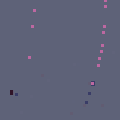
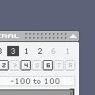

:
autoCrap :
:
autoCrap :

autoCrap . version beta 0.1
|
||||||
Description
Autocrap is a sampling machine that is listening to the sound in of your computer. It records it into some buffers that are played creating various layers of sounds. The pitch and panning of the sound depends on the movement of a random object that keeps wandering around on screen and you can interact with.
You can change the lenght of the buffers, the number of layers and several other parameters. So plug your instrument or a mic into your machine, set some values in the boxes, press space to start recording and have fun.